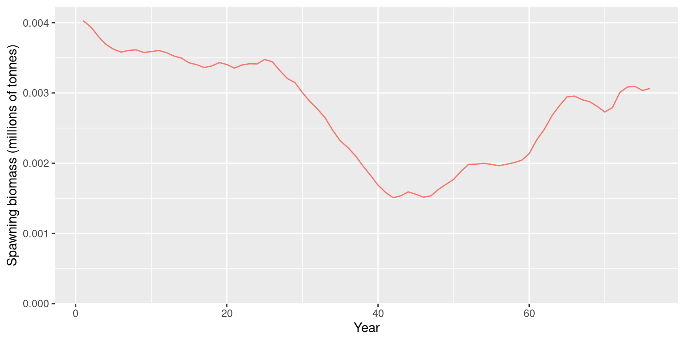

library(opal)
inputs <- opaka_quickstart_inputs()Quickstart Guide
This guide fits a fixed-effects assessment for ’opakapaka (Pristipomoides filamentosus) using the bundled data. It uses the same age convention and selectivity parameterisation as its Stock Synthesis 3 (SS3) reference model.
One portable S3 class, opal_obj, holds the assessment from configuration through fitting, sampling, and reporting. Its lifecycle stage and diagnostic status are separate: a fitted object can still fail its convergence checks. RTMB objectives live outside the saved object and are rebuilt when needed.
Load the model inputs
The package includes a model-input builder so this vignette and the stored example fit use the same data preparation and fixed-effects configuration.
The input builder loads the bundled opakapaka catch, CPUE, and length-composition data; uses biological ages 0–43 to align with SS3; applies the SS3 recruitment bias ramps; and prepares multinomial length compositions for the commercial and research fleets. It fixes life-history parameters at their SS3 values and estimates biomass scale, CPUE catchability, recruitment deviations, initial age structure, and selectivity for fleets with length data.
data.frame(
quantity = c("Years", "Ages", "Fisheries", "Length-composition samples"),
value = c(
inputs$data$n_year,
inputs$data$n_age,
inputs$data$n_fishery,
length(inputs$data$lf_year)
)
)
#> quantity value
#> 1 Years 75
#> 2 Ages 44
#> 3 Fisheries 3
#> 4 Length-composition samples 82Fit the model
Create the assessment, then optimise twice using the existing Opal defaults. The wrapper resolves bounds, stores both optimiser passes, and checks the final fit. It retains results and warns if the checks fail.
fit <- opal_obj(
data = inputs$data,
parameters = inputs$parameters,
map = inputs$map,
metadata = list(stock = "Opakapaka", model = "Fixed-effects quickstart")
)
fit <- opal_fit(fit)
fit
#> <opal_obj> fitted
#> Active parameters: 127
#> Objective: 1832.412
#> Fit check: failed | MCMC check: not run
fit$validation$fit
#> $passes
#> [1] FALSE
#>
#> $metrics
#> $metrics$convergence
#> [1] 0
#>
#> $metrics$max_gradient
#> [1] 0.001041864
#>
#> $metrics$positive_hessian
#> [1] TRUE
#>
#> $metrics$inside_bounds
#> [1] TRUE
#>
#> $metrics$valid_population
#> [1] TRUE
#>
#>
#> $error
#> NULL
#>
#> $identity
#> $identity$target
#> [1] "082a2a20f7e2f341704e5452b7b2312f"
#>
#> $identity$fit
#> [1] "7459c22d1102869eeae932f6f18cec4b"
#>
#>
#> $settings
#> $settings$gradient_tolerance
#> [1] 0.001
#>
#> $settings$max_rhat
#> [1] 1.01
#>
#> $settings$min_ess
#> [1] 100
#>
#>
#> $checked_at
#> [1] "2026-09-29 00:22:57 UTC"The optimiser can return convergence code zero while the maximum gradient still exceeds the default tolerance of 0.001. Inspect the recorded metrics. If needed, continue from the stored optimum, keeping the same configuration and tolerance. This example allows up to three further calls and stops if the checks still fail; it does not treat the fitted stage as acceptance.
Save a portable fitted model
opal_save() stores ordinary R data with a payload checksum. opal_read() verifies the payload and scientific contract. Neither reading nor rebuilding runs optimisation or MCMC. The same functions also save unfitted objects.
Inspect spawning biomass
Existing plots accept the assessment object directly. Advanced callers can obtain a transient RTMB objective with opal_rtmb(fit, fresh = TRUE).
report <- opal_report(fit)
plot_biomass_spawning(fit, relative = FALSE, labels = "Fixed effects")
Sample and update
Sampling can start before or after fitting. The default sampler uses the stored point, skips internal optimisation, and honours parameter bounds. The following example is intentionally not run while building the vignette. Sampling effort and convergence thresholds need assessment-specific review.
fit <- opal_mcmc(fit, seed = 42, chains = 4, cores = 4,
num_warmup = 1000, num_samples = 500)
fit <- opal_check(fit, scope = "mcmc")
summary(fit)Failed checks retain the samples. A failed or unchecked new run does not replace a previously checked, passing posterior; inspect fit$mcmc_history for earlier and unselected attempts. Refitting the same target preserves its posterior and records which optimisation originally supplied it.
Use opal_update() for changes. Updating data, priors, parameters, maps, random effects, or bounds clears dependent fits, samples, and projections. Metadata and optimiser controls preserve them. Direct changes to scientific fields are rejected by validation. An omitted map resolves defaults, whereas map = list() explicitly leaves all parameters free. Custom stocks should supply their own parameters; a bundled default requires an explicit model.
labelled <- opal_update(fit, metadata = list(label = "Baseline"))
summary(labelled)
#> <opal_obj> fitted
#> Active parameters: 127
#> Objective: 1832.412
#> Fit check: passed | MCMC check: not runProjections and older workflows
project_selectivity(), project_rec_devs(), and project_dynamics() accept objects directly. Choose uncertainty = "mcmc" or "mvn" for dynamics when posterior draws exist. opal_project() stores a projection with its source identity and settings; future catches, selectivity, and recruitment remain explicit inputs. Random-effect dynamics projections require complete joint posterior draws; marginal-only draws and random-effect MVN projections are rejected.
opal_fit(data, obj, opt, ...) still supports the legacy constructor. opal_from_fit() converts an existing fit, and opal_read() upgrades legacy saved fits after verifying the rebuilt objective, without refitting. The companion saved-fit review demonstrates this migration. The projection guide gives a complete runnable example with future catch, recruitment, selectivity, and saved projection provenance.